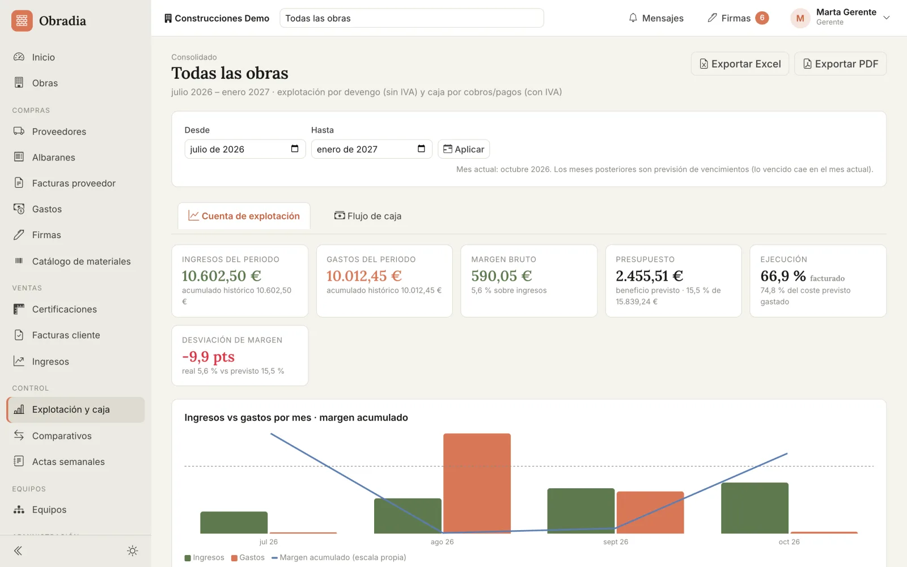

Producto propio · En prelanzamiento
Obradia
Diseñé y desarrollé una aplicación web para constructoras que conecta presupuestos, compras y certificaciones con el seguimiento económico de cada obra.
La arquitectura asigna una base de datos a cada empresa y ajusta el acceso según el rol y las obras de cada usuario.
ASP.NET Core · Entity Framework Core · SQL Server
